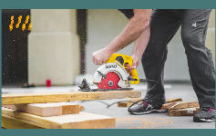

Interested? Get a Quote
GET A FREE QUOTE
free onsite installation
We specialize in building garden sheds with minimal disruption to your property and existing landscaping. Our quick and efficient installation process ensures that you'll have a quality, durable shed ready for use in no time. We don't need cranes, fences, or other bulky equipment.
solid footings
Setting your shed on a base of solid cement blocks is the key to extending its life. By making sure the base remains level and raised, you are not only protecting it from rot but also keeping out pesky insects that can cause damage to your floor and walls over time.
2x6 Floor Joists & durable
3/4" ply Floors
Our sheds are built to last, which is why we use 2x6 floor joists instead of the industry standard 2x4s. This durable construction makes our sheds strong and resilient, giving you great value for your money. Our 3/4" floor is strong and resilient and will stand the test of time.
"Lifetime" Quality
Shingles
We offer a choice of popular shingle colours backed by a limited lifetime warranty from the manufacturer, giving your shed a finished roof built for demanding Ottawa conditions.
Smart Side Wall Panels
We understand that durability is key when it comes to building the perfect shed. That is why we use LP SmartSide for our shed walls. It is an exterior-grade siding panel, pre-primed for fast installation and designed for long-term outdoor use.
White No Maintenance
Trim
Living in Ottawa means dealing with extreme weather conditions. Our white PVC trim boards will not rot or degrade, giving you a long-lasting, clean look with very little maintenance.
4" Roof Overhangs
Our sheds have 4" overhangs around the roof-line with aluminum drip edge to help ensure the shed stays dry in bad weather.